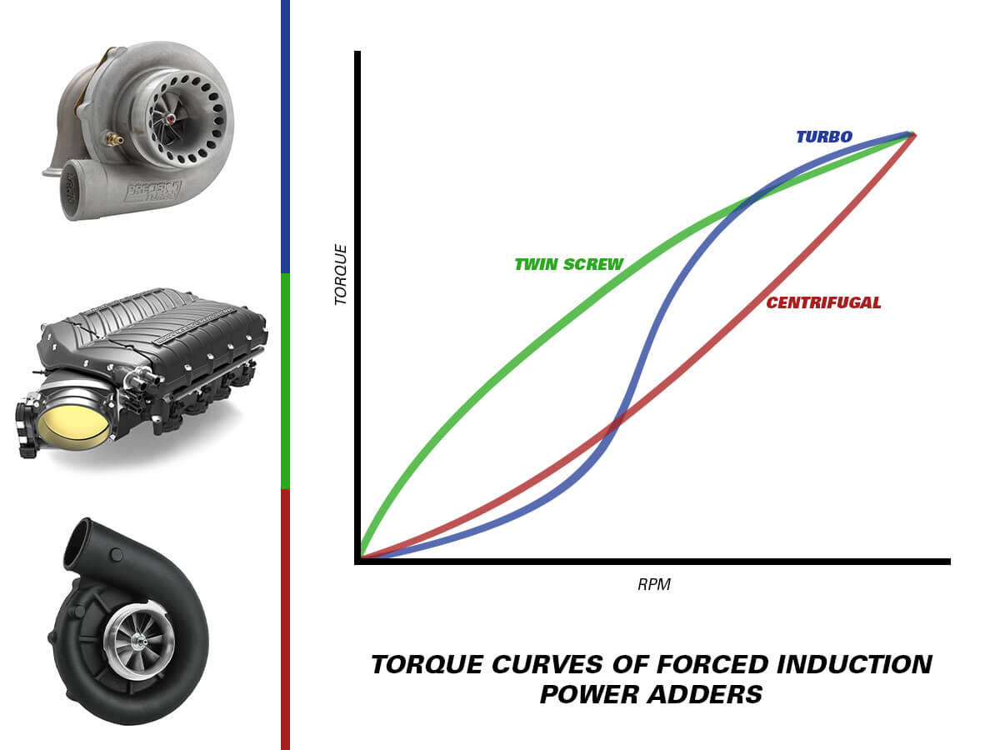

Engine tuning is the process of modifying the operating characteristics of an engine. In a typical engine set-up, there are various mechanical and electronic elements such as the intake manifold, spark plugs, and mass air flow. Modern engines employ the use of an engine control unit to provide the best balance between performance and emissions. Via the OBD communications protocol, electronically controlled aspects of the engine can be modified in a process known as mapping. Mapping can either be performed by changing the software within the ECU (chip tuning via firmware modification), or by providing false data via plug-in hardware. Other standalone engine management systems are available; these systems replace the factory computer with one that is user-programmable. Mechanical components of the engine can also be added or replaced, such as forced induction systems like turbochargers or superchargers.


"Supercharger" is the generic term for an air compressor used to increase the pressure or density of air entering an engine, providing more oxygen with which to burn fuel. The earliest superchargers were all driven by power taken from the crankshaft, typically by gear, belt, or chain. A turbocharger is simply a supercharger that is powered instead by a turbine in the exhaust stream. The first of these, dating to 1915, were referred to as turbosuperchargers and were employed on radial aircraft engines to boost their power in the thinner air found at higher altitudes. That name was first shortened to turbocharger and then to turbo.
Each can be used to increase power, fuel economy, or both, and each has pros and cons. Turbochargers capitalize on some of the "free" energy that would otherwise be completely lost in the exhaust. Driving the turbine does increase exhaust backpressure, which exerts some load on the engine, but the net loss tends to be less by comparison with the direct mechanical load that driving a supercharger involves (the biggest blowers powering a top-fuel dragster consume 900 crankshaft horsepower in an engine rated at 7,500 total horsepower). But superchargers can provide their boost almost instantly, whereas turbochargers typically suffer some response lag while the exhaust pressure required to spin the turbine builds.
